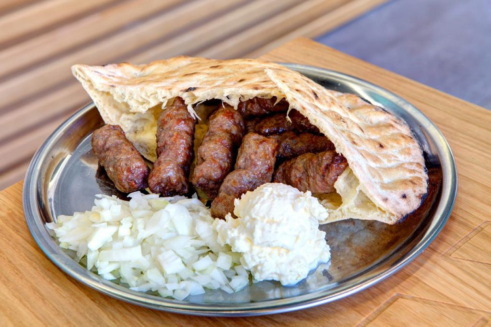

Cevapi

Flavorful and delicious skinless sausages called cevapi and served in Bosnia as a traditional dish, but can also be found in other Southeastern Europe countries. Served with warmed pita bread and toppings such as sour cream, tomatoes, and chopped onions.
Ingredients
- 2 1/2 pounds 85% lean ground beef
- 2 white eggs
- 2 red onions, minced
- 6 cloves garlic, minced
- 1 tablespoon ground black pepper
- 1/2 tablespoon salt
- 1/2 tablespoon cayenne pepper
- 1/2 tablespoon baking soda
- 3/4 teaspoon paprika
Steps
- Combine ground beef, turkey sausage, and egg whites in a large bowl. Add onions, garlic, black pepper, salt, cayenne, baking soda, and paprika. Mix well using your hands.
- For mixture into finger-length sausages about 3/4-inch thick. Stack on a large plate, using waxed paper between the layers. Cover the plate with plastic wrap and refrigerate for at least 1 hour.
- Preheat an outdoor grill for medium heat and lightly oil the grate. Grill sausages, turning as needed, until no longer pink in the center, 8 to 10 minutes.